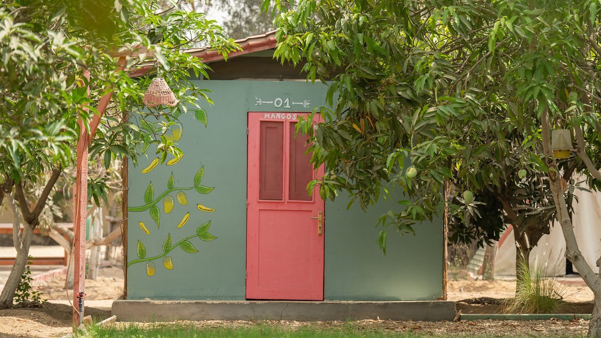

A clearer way to make the day happen
Room for
the day.
A calm working language for people who bring days outdoors to life. Rooted in Carpediem’s real places, built to keep every detail in view.
Explore the direction
Review image · rights pending
02 / Principles
Outside in spirit.
Precise in practice.
Let the place speak.
Real campsite photography belongs where it adds context. Working surfaces stay quiet so tasks remain easy to scan.
Make clarity feel human.
Expressive display type sets the tone. Labels, numbers and controls keep a steady, readable rhythm.
Use color with purpose.
Forest green anchors action; orange stays a rare brand note. Status always has words as well as color.
03 / Interface language
Made for the
work of making.
Generous targets, visible hierarchy and data that stays legible on a small screen. These are component specimens, with no product workflow attached.
See the type in useLocation reference
Mango Tree Campsite
East Activity Grove · New CairoUse the full location name.
04 / The system
A small set of
good decisions.
Color
From the official badge, tuned for usable contrast.
Type
Bricolage for character. Hanken for the work.
Aa24 / 08:30Motion
Quiet transitions that show state. Immediate response to every action, with reduced motion respected.